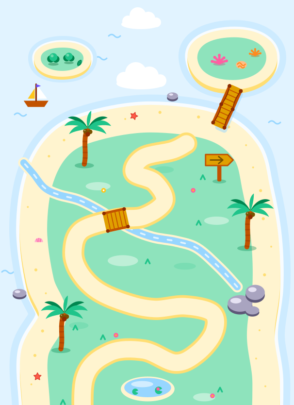
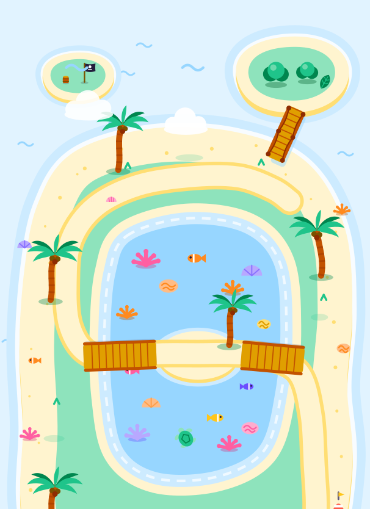
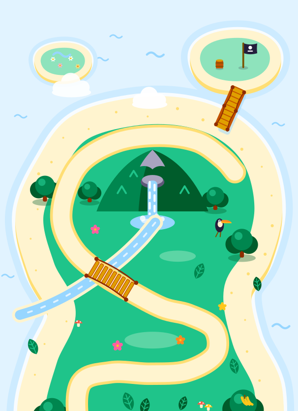
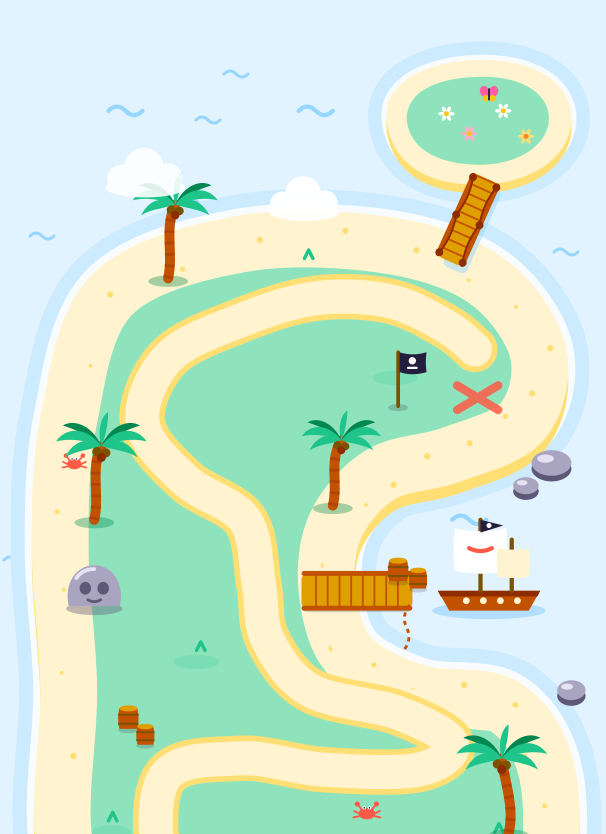
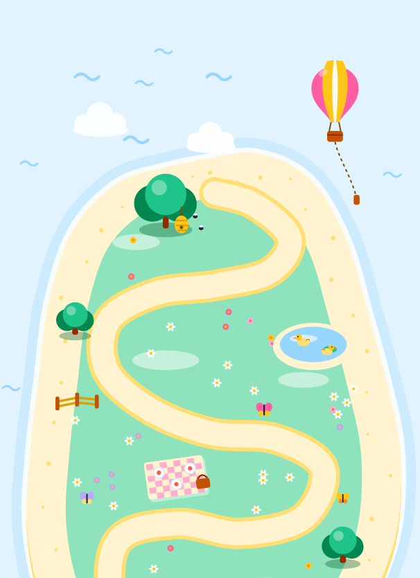
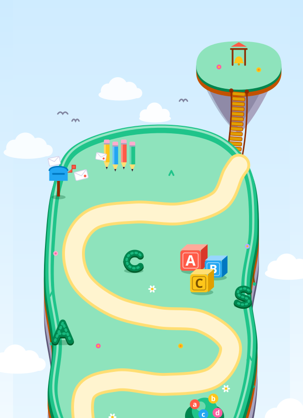
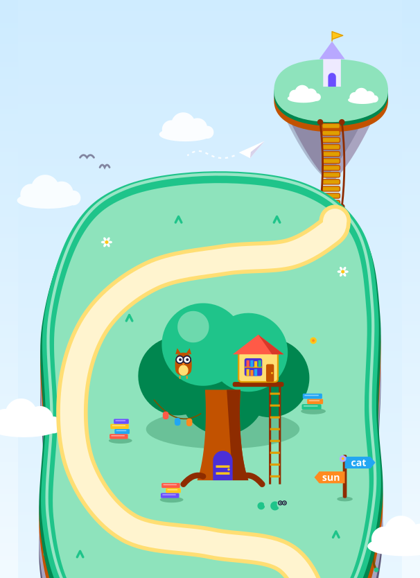
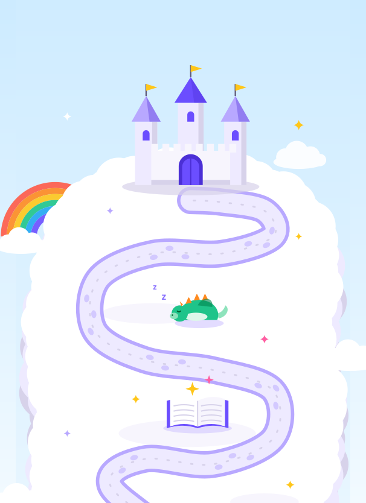

Plán lekcíLesson plan
Co se s Tayou dítě naučí, lekci po lekci. Deset ostrovů, na každém osm lekcí po pěti otázkách: od počítání do pěti až po dělení a od prvních písmen až po malé příběhy. What your child learns with Taya, lesson by lesson. Ten islands, each with eight lessons of five questions: from counting to five all the way to sharing, and from first letters to tiny stories.
Jak vypadá lekceHow a lesson works
Každá lekce má stejný tvar, takže dítě ví, co ho čeká. Lekce 1–7 přidávají vždy jeden nový krok. Osmá lekce zopakuje celý ostrov těsně předtím, než se otevře truhla s pokladem. Every lesson has the same shape, so kids know what’s coming. Lessons 1–7 each add one new step. Lesson 8 mixes the whole island just before the treasure chest opens.
- 1
RozcvičkaWarm-up
Jedna otázka z minulé lekce. V první lekci ostrova z ostrova předchozího.One question from the lesson before. In lesson 1, from the island before.
- 2–4
Nový krokNew step
Tři otázky na to, co je nového. Nejdřív ta nejlehčí, s čísly nebo písmeny, která dítě už zná.Three questions on what’s new. Easiest first, with numbers or letters your child already knows.
- 5
VýzvaStretch
Stejná dovednost ještě jednou, jiným typem otázky nebo o kousek těžší.The same skill once more, in a different question type or one notch harder.
- Chyba nevadí.Mistakes are fine. Ukáže se nápověda, dítě to zkusí znovu a hvězdu dostane i tak.A hint shows, your child tries again, and the star still comes.
- Co nešlo, se vrátí.Tricky bits come back. Od třetí lekce může jedna otázka zopakovat něco, co dítěti dřív nešlo.From lesson 3 on, one question can bring back something your child found hard earlier.
- Pokaždé trochu jinak.Never quite the same. Každá lekce vybírá své otázky z většího souboru, takže opakovaná lekce není stejná.Each lesson picks its questions from a larger pool, so a replay isn’t the same lesson again.
MatematikaMath
Matematika je v obou jazycích stejná, mění se jen slova kolem čísel. Úlohy používají slova, která dítě slyší ve škole, a na českých obrazovkách se násobí tečkou (3 · 4) a dělí dvojtečkou (12 : 3), stejně jako ve škole. Math is the same in both languages; only the words around the numbers change. Taya uses the words kids hear at school, and the Times Island order (2, 10, 5, 3, 4) fits both English and Czech schools.

Ostrov počítáníCounting Island
Počítání začíná u malých čísel a roste po několika. Nula přijde ve 2. lekci, první desítkový rámeček ve 3. a čísla nad deset jako „10 a ještě něco“ v 6. a 7. lekci.Counting starts small and grows a few numbers at a time. Zero comes in lesson 2, the first ten-frame in lesson 3, and teen numbers as “10 and some more” in lessons 6 and 7.
1. Počítání do 5Count 1–5
Kolik je tu ryb? (3)How many fish? (3)
2. Číslice 0–5 a nulaNumerals 0–5, zero
Ťukni na číslo čtyři.Tap 4.
3. Počítání 6–10 v desítkovém rámečkuCount 6–10 in one ten-frame
Kolik je tu jablek? (8)How many apples? (8)
4. Pořadí čísel do 10Number order to 10
6, 7, ? Které číslo je další?6, 7, ?
5. Více a méně do 10More and fewer to 10
Ve kterém hnízdě je více vajíček?Which nest has more eggs?
6. 11–15 jako 10 a ještě něco11–15 as 10 and some more
Kolik je tu mušlí? (13)How many shells? (13)
7. 16–20 a pořadí do 2016–20, order to 20
Ťukni na číslo devatenáct.17, 18, ?
8. Opakování celého ostrova, 0–20Island mix, 0–20
Kde je méně mincí, 12, nebo 15?Which has fewer coins, 12 or 15?

Ostrov sčítáníPlus Island
Nejdřív sčítání do 10, pak do 20. Přechod přes desítku čeká až na 7. lekci, kdy už dítě zná rozklady desítky a dvojnásobky. V 1.–3. lekci stojí vedle čísel i obrázky.Plus works within 10 first, then within 20. Crossing 10 waits for lesson 7, once kids know the pairs that make 10 and their doubles. Objects sit beside the numbers in lessons 1–3.
1. Co znamená +: spojení dvou skupin do 5What + means: join two groups within 5
2 jablka a ještě 3. Kolik je jich dohromady?2 apples and 3 more. How many in all?
2. Do 10: přičítání od většího číslaWithin 10: count on from the bigger number
Plave tu 6 ryb, připlavou ještě 3. Kolik ryb je teď?3 fish swim up to 6 fish. How many fish now?
3. Dvojnásobky do 5 + 5Doubles to 5 + 5
4 + 4 = ?4 + 4 = ?
4. Rozklady čísla 10Pairs that make 10
8 + ? = 10. Kolik chybí do deseti?8 + ? = 10. How many more to make 10?
5. Do 20 bez přechodu přes desítkuTeen sums without crossing 10
10 + 6 = ? a 12 + 3 = ?10 + 6 = ? and 12 + 3 = ?
6. Dvojnásobky do 10 + 10 a jejich sousedéDoubles to 10 + 10, near doubles
7 + 7 = ?, potom 6 + 7 = ?7 + 7 = ?, then 6 + 7 = ?
7. Přechod přes desítku: nejdřív doplnit do 10Crossing 10 by making 10 first
8 + 5 = 8 + 2 + 3 = ?8 + 5 = 8 + 2 + 3 = ?
8. Opakování celého ostrova do 20Island mix within 20
Na písku je 7 krabů, přilezou ještě 6. Kolik je krabů?7 crabs on the sand, 6 more come. How many crabs?

Ostrov odčítáníMinus Island
Odčítání jde stejnou cestou jako sčítání: do 10, pak do 20 a nakonec přechod přes desítku. Porovnávání („o kolik více?“) má vlastní lekci, protože je to nejtěžší formulace.Minus follows the same path as Plus: within 10, then teen numbers, then crossing 10. Comparing (“how many more?”) gets a lesson of its own, because it’s the trickiest wording.
1. Odebírání do 5Take away within 5
5 balónků, 2 prasknou. Kolik jich zbylo?5 balloons, 2 pop. How many are left?
2. Znaménko − do 10The − sign within 10
9 − 4 = ?9 − 4 = ?
3. Počítání pozpátku po 1, 2 a 3Count back by 1, 2 or 3
10 − 3: počítej pozpátku 9, 8, 710 − 3: count back 9, 8, 7
4. Odčítání od 10 a chybějící částTake away from 10, missing part
10 − ? = 610 − ? = 6
5. Porovnání dvou skupin do 10Compare two groups within 10
O kolik je více červených ryb než modrých? (7 a 4)How many more red fish than blue fish? (7 and 4)
6. Do 20 bez přechodu přes desítkuTeen numbers without crossing 10
17 − 4 = ?17 − 4 = ?
7. Přechod přes desítku: nejdřív zpátky na 10Crossing 10 by going back to 10 first
13 − 5 = 13 − 3 − 2 = ?13 − 5 = 13 − 3 − 2 = ?
8. Početní rodinky a opakování ostrovaFact families and island mix
4 + 5 = 9, takže 9 − 5 = ?4 + 5 = 9, so 9 − 5 = ?

Ostrov násobeníTimes Island
Násobení začíná skupinkami, které dítě vidí, a teprve pak přijde znaménko. Potom každá lekce přidá jednu řadu násobilky, od nejlehčí: 2, 10, 5, 3, 4.Times starts with groups kids can see, then brings in the sign. After that it adds one table per lesson, easiest first: 2, 10, 5, 3, 4.
1. Stejné skupinky, zatím bez znaménkaEqual groups, no sign yet
3 kbelíky, v každém jsou 2 mušle. Kolik je mušlí?3 buckets with 2 shells in each. How many shells?
2. Ze sčítání stejných skupin je násobeníAdding equal groups becomes ×
2 + 2 + 2 = 3 · ?2 + 2 + 2 = 3 × ?
3. Násobilka 2The 2 table
Počítej po dvou: 2, 4, ?, 8Count by 2s: 2, 4, ?, 8
4. Násobilka 10The 10 table
4 pytlíky, v každém je 10 mincí. Kolik je mincí?4 bags of 10 coins. How many coins?
5. Násobilka 5The 5 table
Počítej po pěti: 5, 10, ?, 20Count by 5s: 5, 10, ?, 20
6. Násobilka 3The 3 table
6 řad, v každé jsou 3 mince. Kolik je mincí?6 rows of 3 coins. How many coins?
7. Násobilka 4The 4 table
4 + 4 + 4 = ? · 44 + 4 + 4 = ? × 4
8. Všech pět řad dohromadyMix of all five tables
5 · 4 = ?5 × 4 = ?

Ostrov děleníShare Island
Dělení začíná rozdáváním na talířky a znaménko přijde, až dává smysl. Pak přibude dělení po skupinkách a poloviny a na konci propojení dělení s násobením. Vždycky to vyjde beze zbytku.Share starts by dealing things onto plates and brings in the sign once that makes sense. Then come grouping and halves, and it ends by linking share back to times. Every share comes out even.
1. Dělení mezi 2 rozdávánímShare between 2 by dealing
Rozděl 6 jahod mezi 2 ptáčky.Share 6 berries between 2 birds.
2. Dělení mezi 3 a 4Share between 3 and 4
12 kokosů pro 3 kamarády. Kolik dostane každý?12 coconuts for 3 friends. How many each?
3. Znaménko :The ÷ sign
12 : 3 = ?12 ÷ 3 = ?
4. Dělení mezi 5 a 6, do 30Share between 5 and 6, totals to 30
30 mušlí pro 6 krabů. Kolik dostane každý?30 shells for 6 crabs. How many each?
5. Dělení po: kolik bude skupin?Grouping: how many groups?
12 mušlí, do každého sáčku dáme 4. Kolik bude sáčků?12 shells, 4 in each bag. How many bags?
6. Poloviny do 30Halves up to 30
Polovina z 16 je ?Half of 16 is ?
7. Násobení a dělení patří k soběTimes and share undo each other
3 · 4 = 12, takže 12 : 3 = ?3 × 4 = 12, so 12 ÷ 3 = ?
8. Opakování celého ostrovaIsland mix
20 : 5 = ?20 ÷ 5 = ?
ČteníWords
Čeština a angličtina se učí číst úplně jinak, a tak má každý jazyk vlastní stopu: stejné ostrovy, ale jiná písmena, hlásky a slova. Čeština se píše, jak se čte, takže začínáme samohláskami, čteme po slabikách (MA-MA) a čas věnujeme hlavně čárkám, háčkům, ch a měkkým slabikám. English and Czech kids learn to read in opposite ways, so each language gets its own track: the same islands, but different letters, sounds and words. English spelling is irregular, so the English track follows phonics: one sound per letter, blending c-a-t, then letter pairs like sh, ch and th, and a few tricky words learned by sight.
Zobrazujeme českou stopu. Anglickou uvidíte po přepnutí na EN. Showing the English track. Switch to CZ to see the Czech one.

Ostrov písmenLetter Island
Jako v první třídě: nejdřív samohlásky a čárky i háčky mají každé svou lekci. Taya říká hlásku („d“, ne „dé“), protože se v první třídě čte po hláskách.The alphabet in ABC chunks, so the letter train always has neighbours to ask about. Taya says each letter’s name (“dee”).
1. Samohlásky a e i o u y
Taya řekne o, dítě ho najde mezi o, a, e, u
2. m l s p t
Které malé písmeno patří k M?
3. j n v d k
Které malé písmeno patří k D? (d, b, p, h)
4. r z b c h
Taya řekne h, dítě ho najde mezi h, k, b, n
5. f g ch a vzácná q w x
Co je v abecedě po H? (CH)
6. Dlouhé samohlásky á é í ó ú ů ý
Taya řekne á, dítě ho najde mezi a, á, e, é
7. Písmena s háčkem č ď ě ň ř š ť ž
Taya řekne ř, dítě ho najde mezi r, ř, z, ž
8. Opakování celé abecedy
Co je v abecedě po C? (Č)
1. a b c d e
Hear d, tap it among a, c, d, e
2. f g h i j
Which small letter goes with G?
3. k l m n o
k, l, m, ?
4. p q r s t
Hear p, tap it among p, q, b, d
5. u v w x y z
w, x, y, ?
6. Look-alikes b d p q, n u, m w
Hear b, tap it among b, d, p, q
7. Capitals that look different: A a, D d, G g, R r
Which small letter goes with R?
8. Island mix, whole alphabet
Which letter comes after m?

Ostrov hlásekSound Island
Nejdřív samohlásky, pak hlásky s háčkem a ch, každé ve vlastní lekci. Navíc dítě tleská slabiky, na kterých české čtení stojí.Phonics order, four or five sounds per lesson, then the letter pairs sh, ch and th.
1. Samohlásky a e i o u
Který obrázek začíná na U? (ucho, oko, ananas, iglú)
2. m l s p t
Na jaké písmeno začíná myš? (m, n, l, s)
3. j n v d k
Který obrázek začíná stejně jako kolo? (koza, pes, nos, lev)
4. r z b c h
Který obrázek začíná na H? (had, dům, ryba, sýr)
5. č ř š ž
Který obrázek začíná na Ž? (žába, zámek, šála, čepice)
6. f g ch
Na jaké písmeno začíná chléb? (ch, h, c, k)
7. Tleskání slabik
Kolik slabik má kočka? (2)
8. Opakování ostrova
Který obrázek začíná stejně jako myš? (mrak, pes, ryba, oko)
1. s a t p
Which picture starts with /s/? (sun, cat, dog, map)
2. i n m d
What does map start with? (m, n, d, s)
3. g o c k
Which starts like cat? (cup, dog, sun, map)
4. e u r h
Which picture starts with /h/? (hat, egg, sun, bus)
5. b f l j
What does bus start with? (b, d, p, f)
6. v w y z, qu
Which starts like web? (wig, van, zip, yo-yo)
7. sh ch th
Which picture starts with /sh/? (ship, chip, sun, fish)
8. Island mix
Which starts like moon? (map, sun, net, dog)

Ostrov skládáníBlend Island
Nejdřív skládání slabik (LA · MA → lama), pak jednoslabičná slova, slova s háčky, shluky souhlásek, měkké slabiky a slova bez samohlásky. Když to nejde, dílky se k sobě přisunou a Taya je řekne pomalu a pak rychleji.Single sounds blend into three-letter words, one short vowel at a time, then words with ck, sh, ch and th. When it’s tricky, the sounds slide together while Taya says them slower, then faster.
1. Dvě otevřené slabiky: lama, pila, mísa, sova
LA · MA, ťukni na obrázek
2. Další dvouslabičná slova: ryba, koza, ruka, kolo
ry _ a (b, p, d, v)
3. Jednoslabičná slova: pes, les, nos, sýr, dům
p-e-s
4. Slova s háčky: žába, šála, řepa, myš
Které slovo patří k obrázku? (žába, šála, čáp, řepa)
5. Shluky souhlásek: vlak, drak, hrad, stůl
d-r-a-k
6. Měkké slabiky di ti ni, dě tě ně mě: děti, dýně, tygr
t _ gr (y, i, í, e)
7. Slova bez samohlásky: vlk, krk, prst
v-l-k (vlk, vlak, lev, pes)
8. Opakování ostrova
1. Short a: cat, hat, map, bag
c-a-t, tap the picture
2. Short i: pig, pin, lid, six
p-i-g
3. Short o: dog, box, pot, log
d _ g (o, i, u, a)
4. Short u and e: sun, bus, cup, bed, hen
Which word? (sun, sit, sum, run)
5. All short vowels
h _ t (a, i, o, u)
6. ck, ll, ss, ff: duck, bell, dress
d-u-ck
7. sh ch th: ship, chip, fish, moth
Which word? (fish, dish, wish, fig)
8. Island mix

Ostrov slovWord Island
Slova se teď čtou celá a skládání po hláskách zbývá jen jako nápověda. Přibývají delší slova a další čárky a háčky, na konci rýmy a jedno nebo víc.Words are now read whole, and blending is only the hint. Consonant blends, vowel pairs and silent e come in, and the island ends with rhymes and one-or-many.
1. Dvouslabičná slova čtená vcelku
koza (koza, kolo, ryba, sova)
2. Zavřené slabiky a dlouhé samohlásky: kočka, dům, míč
míč (míč, mák, nos, dům)
3. Tři slabiky: čepice, jahoda, kalhoty
jahoda (jahoda, jablko, jelen, jezevec)
4. Shluky s háčky a čárkami: hruška, třešně, švestka
hruška (hruška, hračka, houska, hrnek)
5. Rýmy -ak, -es
Které slovo se rýmuje se slovem drak? (vlak, dům, pes, koza)
6. Delší rýmy
Které slovo se rýmuje se slovem kráva? (tráva, koza, krabice, ryba)
7. Jedno a víc: kočka, kočky; auto, auta
3 kočky (kočky, kočka, kozy, kostky)
8. Opakování ostrova
1. Three-letter words, read whole
dog: tap its picture (dog, cat, sun, bus)
2. Blends: frog, crab, hand, tent, milk
frog (frog, crab, flag, drum)
3. Vowel pairs ee, oa, ai, oo: tree, boat, rain, moon
boat (boat, bat, beat, coat)
4. Silent e: cake, bike, rope, cube
cake (cake, cap, kite, cat)
5. Rhymes -at, -og, -un
Which rhymes with cat? (hat, cup, dog, sun)
6. Rhymes with vowel pairs
Which rhymes with boat? (goat, bat, bee, boot)
7. One and many: cat, cats; box, boxes
3 cats (cats, cat, hats, cast)
8. Island mix

Ostrov příběhůStory Island
Od dvou slov až po dvouřádkové příběhy s otázkou. Všechny možnosti jsou napsané ve správném tvaru, takže se zkouší jen porozumění.From two-word phrases to two-line stories with a question. Tricky words (the, is, she, said) come in a few at a time.
1. Dvě slova
červená čepice (červená čepice, modrá čepice, červený autobus, zelená čepice)
2. Krátké věty s „je“
Kočka je velká.
3. na, v, pod
Kočka je na krabici.
4. Doplň podle obrázku
Pes je v … (krabici, autě, hrnku, domě)
5. Dvě věci se spojkou „a“
Kočka a pes sedí na koberci.
6. Slovesa má, jde, spí, jí
Ema má … (míč, kolo, psa, rybu)
7. Dvouřádkový příběh: kdo a co
Ema má psa. Pes je velký. Kdo má psa?
8. Dvouřádkový příběh: kde; opakování ostrova
Ryba je v hrnku. Kde je ryba?
1. Two-word phrases
a red hat (red hat, blue hat, red bus, green hat)
2. Tricky words the, is, a
The cat is big.
3. in, on, under
The cat is on the box.
4. Finish with a picture clue
The dog is in the … (box, bus, sun, cup)
5. Two things with “and”
A cat and a dog sit on the mat.
6. Tricky words he, she, my, said
She has a … (hat, map, cup, bus)
7. Two-line story: who and what
Sam has a dog. The dog is big. Who has a dog?
8. Two-line story: where; island mix
The fish is in the cup. Where is the fish?
Vyplujte s Tayou na ostrovySet sail with Taya
První ostrov může začít ještě dnes.The first island can start today.